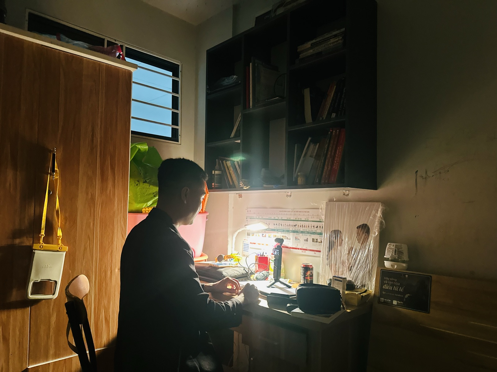

1.300 video và 67 lượt xem: chăm chỉ sai hướng thì vẫn là số 0
Tôi đăng video đều đặn suốt mấy năm nay, gần 1.300 video trên kênh của mình. Tuần này tôi ngồi soát lại toàn bộ kênh bằng con số thật, không cảm tính. Kết quả không dễ nghe: 30 video dài gần nhất, lượt xem ở giữa chỉ là 67.

Một buổi tối quay video như bao buổi khác — nhưng lần này tôi ngồi lại soát cả kênh bằng số liệu thật.
Con số tôi phải nhìn thẳng vào
30 video dài gần nhất của kênh: lượt xem ở giữa (trung vị) chỉ 67. 20 trong số 30 video đó dưới 100 lượt xem. Không video nào vượt 1.000. Trong khi đó, 45 video ngắn (Shorts) gần nhất lại có trung vị 326 lượt xem, cộng dồn hơn 25.000 — tức Shorts đang gánh gần như toàn bộ lượt xem của cả kênh, còn video dài gần như không ai xem.
Đây không phải chuyện thiếu chăm chỉ. Tôi đăng đều, đăng đủ, đăng liên tục suốt một thời gian dài. Vấn đề nằm ở chỗ khác.
Không phải vì yếu — vì tôi tự dạy sai cho thuật toán
Tôi thử đo thứ hạng thật của kênh trên 12 từ khoá liên quan đến đúng nghề mình đang làm. Kết quả: chỉ xuất hiện ở 1 trong 12 từ khoá đó. Với nhiều từ khoá khác — dù kênh có tới 51 video, 66 video liên quan — vẫn nằm ngoài top 20.
Điều đáng nói nhất: khi xem thử những video đang đứng hạng 1 cho các từ khoá đó, lượt xem của họ cũng chỉ khoảng vài chục đến vài trăm. Ngưỡng để cạnh tranh rất thấp — nghĩa là tôi hoàn toàn có thể lọt vào top, chỉ là chưa từng làm đúng cách để lọt vào.
Thua ở đây không phải vì nội dung yếu. Thua vì không điền từ khoá — một việc kỹ thuật đơn giản mà tôi bỏ qua suốt nhiều năm.
Những lỗi rất nhỏ, âm thầm giết từng video
Khi soát kỹ, tôi tìm ra một loạt lỗi kỹ thuật rất cụ thể — không phải chuyện nội dung hay chuyện may rủi:
- Tên kênh không chứa từ khoá nào liên quan đến nghề — trong khi hầu hết kênh cùng lĩnh vực đang xếp hạng trên đều có.
- Video kiểm tra đều không gắn thẻ mô tả, và phần lớn phần mô tả chỉ chép lại đúng tiêu đề — bỏ lỡ cơ hội cho thuật toán hiểu rõ nội dung.
- Một playlist gần 100 video không liên quan đến nghề (kỷ niệm, giải trí cá nhân) nằm chung kênh, làm loãng tín hiệu phân loại "kênh này nói về gì" mà YouTube dùng để gợi ý video cho đúng người xem.
- Lỗi chính tả ở đúng tên dự án bất động sản trong tiêu đề — thiếu một chữ cái là mất luôn từ khoá đó, dù nội dung video hoàn toàn đúng.
- Video giới thiệu kênh (trailer) đã lỗi thời — quảng cáo một sản phẩm đã bán xong từ một năm trước.
Từng lỗi riêng lẻ nghe rất nhỏ. Nhưng gộp lại, chúng khiến thuật toán hiểu sai kênh này đang nói về ai, dành cho ai — và cứ thế đẩy video tới sai tệp người xem suốt nhiều năm mà tôi không hề biết.
Bài học cho nghề, không chỉ cho kênh video
Tôi nghĩ về điều này và thấy nó đúng y hệt trong nghề môi giới. Có người đi thực địa đều đặn, gọi điện đều đặn, đăng bài đều đặn — nhưng nếu gọi sai tệp khách, đăng sai kênh, chào sai thời điểm, thì sự đều đặn đó cũng chỉ tạo ra chuyển động, không tạo ra kết quả.
Siêng năng là điều kiện cần, nhưng không thay thế được việc đo lường đúng chỗ mình đang sai. Tôi từng nghĩ chỉ cần làm nhiều hơn, đăng nhiều hơn là sẽ ra kết quả. Tuần này tôi học lại một điều cũ: trước khi làm nhiều hơn, phải biết chắc mình đang làm đúng hướng.
Tôi đang bắt tay sửa lại từng phần một — không phải đập đi làm lại, mà sửa đúng chỗ đang hỏng. Sẽ có bài cập nhật khi có kết quả thật.
"Rồi, ngày mới tốt lành nhé."
Sống tử tế · Kiếm tiền hạnh phúc · Cho đi giá trị
Anh/chị cũng đang chăm chỉ mà chưa thấy kết quả?
Đôi khi vấn đề không phải là làm chưa đủ, mà là đo sai chỗ. Nhắn tôi câu chuyện của anh/chị, biết đâu cùng tìm ra điểm nghẽn.
Theo dõi trên Facebook